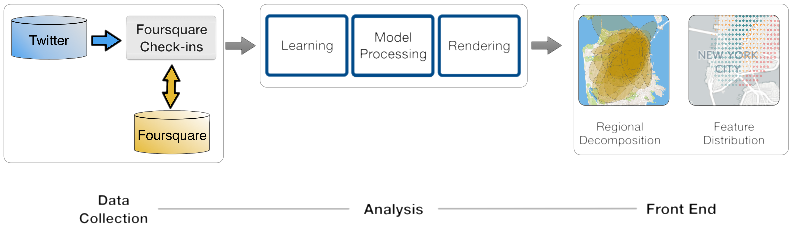

Overview
GeoTopics is a system to explore geographical patterns of urban activity. The system collects publicly shared check-ins generated by Foursquare users, that reveal who spends time where, when, and on what type of activity. It then employs sparse probabilistic modeling techniques to learn associations between different regions of a city and multi-feature descriptions of urban activity. Users of the system select a city of interest and explore visualizations that highlight how different types of activity are spatially and temporally distributed in the city.
Architecture
The architecture of the system is shown in the figure below. As shown there, it consists of three modules, namely data collection, analysis, and the front-end.

Data collection
The two main tasks of this module are to (i) filter the Twitter gardenhose sample to look for publicly shared check-ins, and (ii) subsequently query Foursquare in order to obtain data associated with each check-in. The module also performs data-cleaning and filtering tasks. Its output is a database of venues and their associated activity for a period of time.
Analysis
The two main tasks of this module are to (i) fit a model on the data for each city, and (ii) process the resulting models and produce the maps used for exploration by the next module. Model training takes a few hours on 8 cores using the numpy Python library for data acquired over the period of one month.
Front-end
The system provides a user interface to enable the exploration of analysis results. The user is able to select a city of interest and explore the analysis results produced for that city by the two previous modules.
The demo offers the following functionality.
Regional decomposition
The user selects one city to obtain a decomposition of the city into a small number of regions, each associated with a description of activity. The description is provided in the form of relative frequencies, that describe how often different types of activity appear in that region (e.g., ‘15% of activity appears at restaurants’) and how more often compared to the entire city (e.g., ‘2 times more frequently than the rest of the city’).
Likely and distinctive feature values
The user selects one feature of the data, e.g., the category of venues or the time of the day of check-ins, and obtains heatmaps of two types: one that shows which feature value is most likely (i.e. frequent) at each point in the city; and one that shows which feature value is most distinctive at each point in the city (in the sense that it appears much more frequently than in the rest of the city). For example, by inspecting the heatmaps, one might discover that restaurants is the most common category type near Times Square in Manhattan, and theaters is the most distinctive category type for the same area.
Geographic distribution of feature values
Finally, the user picks one value for the feature selected in the previous step (e.g., value ‘restaurant’ for feature venue category, or value ‘morning’ for feature check-in time of the day). The system then provides a distribution of activity associated with the selected feature value across the city.
Contributors
Emre Çelikten, Géraud Le Falher, Michael Mathioudakis
Acknowledgements
This work is supported by the European Community’s H2020 Program under the scheme ‘INFRAIA-1-2014-2015: Research Infrastructures’, grant agreement #654024 ‘SoBig- Data: Social Mining and Big Data Ecosystem’.